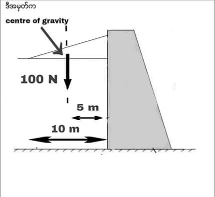

ေနာက္ moment နဲ႔ဆုိင္တဲ့ အေရးႀကီးတဲ့ သေဘာတရားတစ္ခု႐ွိတယ္၊ centre of gravity တဲ့။ တစ္ခ်ိဳ႕ကလည္း centre of mass လို႔ သံုးၾကတယ္။ ( တကယ္တမ္းေတာ့ အဲဒီႏွစ္ခုက မတူဘူးကြ၊ ဒါေပမယ့္ ႐ွင္းလိုက္ရင္ ပို႐ႈပ္သြားလိမ့္မယ္၊) centre of gravity ဆိုတာ အလြယ္ဆံုးေျပာရရင္ 'အေလးခ်ိန္ရဲ႕ ဗဟိုခ်က္' ကို ေျပာတာပဲ။ အရာဝတၳဳတစ္ခုမွာ ကိုယ္ပိုင္အေလးခ်ိန္ own weight ဆိုတာ ႐ွိတယ္။ centre of gravity ဆိုတာ အဲဒီအေလးခ်ိန္ မ်ွေျခအမွတ္ ဒါမွမဟုတ္ အေလးခ်ိန္ေတြရဲ႕ စုခ်က္ကိုေျပာတာ။ ေနာက္တစ္မ်ဳိးေျပာရရင္ အဲဒီအရာဝတၱဳရဲ႕ စုစုေပါင္းအေလးခ်ိန္ သက္ေရာက္တဲ့ အမွတ္ပိြဳင့္ပဲ။ ဒီလိုမ်ိဳးကို ေျပာတာပါ...
ဥပမာ အရြယ္ညီသံတုတ္တစ္ေခ်ာင္းဆိုပါေတာ့။ မင္း မ်က္စိမွိတ္ထားၿပီး သံတုတ္ကို 'မ' ၾကည့္မယ္။အဲ့လို 'မ' ၾကည့္တဲ့အခါ သံတုတ္ရဲ႕ အလယ္က 'မ'
မိရင္ ပိုၿပီးေလးတယ္၊ ပိုၿပီး စီးစီးပိုးပိုး႐ွိတယ္လို႔ ခံစားရတယ္။ အလယ္မဟုတ္တဲ့ တစ္ျခားေနရာက 'မ' မိရင္ အဲ့လို ေလးေလးပင္ပင္ စီးစီးပိုးပိုး မ႐ွိဘူး
(မယံု စမ္းၾကည့္လို႔ရပါတယ္) အဲ့ဒီသံတုတ္ရဲ႕ အလယ္ဆိုတာ centre of gravity ပဲ။
တစ္နည္းအားျဖင့္ သံတုတ္ရဲ႕ စုစုေပါင္းအေလးခ်ိန္ သက္ေရာက္ျဖတ္သန္းသြားတဲ့ အမွတ္ပဲ။ ဒါေၾကာင့္ အဲ့ဒီ အမွတ္ေနရာက 'မ' မိရင္ ပိုၿပီးေလးေလးပင္ပင္႐ွိေနတာ။
( ၾကားျဖတ္လို႔ေျပာရရင္ centre of gravity ဆိုတာ ပံုသဏာၭန္ရဲ႕ ဗဟိုခ်က္ geometrical centre နဲ႔ အျမဲမတူဘူး။ ေစာေစာက သံေခ်ာင္းလို ပံုသဏာၭန္မွန္တဲ့ အရာဝတၳဳေတြအတြက္ေတာ့ တူတယ္။ ပံုသဏာၭန္မွန္တဲ့ေကာင္ေတြ အတြက္ centre of gravity ဟာ သူရဲ႕အလယ္မွတ္လို႔ေျပာလို႔ရတယ္။ ဥပမာ စက္ဝိုင္းရဲ႕ centre of gravity ဆို သူ႔ရဲ႕ဗဟိုခ်က္ပဲ။ ပံုသဏာၭန္မမွန္ရင္ေတာ့ အဲလိုမတူႏုိင္ဘူး)
centre of gravity ဟာ မ်ွေျခအမွတ္လို႔ ေျပာထားသလိုပဲ၊ အဲ့ဒီေနရာမွာ ေထာက္ထားရင္ အဲဒီ အရာဝတၳဳဟာ ဟန္ခ်က္ညီေနတယ္။
ဥပမာ စာအုပ္ရဲ႕ အလယ္မွာ (centre of gravity မွာ) လက္နဲ႔ေထာက္ထားလိုက္ရင္ စာအုပ္က ဟန္ခ်က္ညီေနတာမ်ိဳးေပါ့။ ႀကိဳးတန္းေပၚ
လမ္းေလ်ွာက္တယ္ဆိုရင္လည္း အဲဒီ centre of gravity အမွတ္ကို ႀကိဳးတန္းနဲ႔ အညီထားၿပီး ေလ်ွာက္ရတယ္။ ဒါမွ ဟန္ခ်က္ညီၿပီး ျပဳတ္မက်မွာ။
ဗဟုသုတအေနနဲ႔ ေျပာရရင္ဘတစ္ခုခုကို တုတ္နဲ႔႐ိုက္မယ္ဆိုရင္ centre of gravity နဲ႔ တည့္ေအာင္႐ိုက္၊ ႐ိုက္အား ပိုျပင္းတယ္။
 ဒီေလာက္ဆုိ centre of gravity ဆိုတာဘာလဲ.. ရိပ္မိေလာက္ပါၿပီ။ centre of gravity နဲ႔ပတ္သတ္တဲ့ အေရးႀကီးဆံုးအခ်က္ကေတာ့ အဲဒီအမွတ္ကို အရာဝတၳဳရဲ႕ စုစုေပါင္းအေလးခ်ိန္ ျဖတ္သန္းသက္ေရာက္ သြားတယ္ဆိုတာပဲ။ ဒီအခ်က္က moment နဲ႔ ပတ္သက္လို႔ အေရးႀကီးတယ္။ ဘာလို႔လဲဆိုေတာ့ ဒီအခ်က္က လည္အားအတြက္ အကြာအေဝးကို ေျပာျပေနလို႔ပဲ။